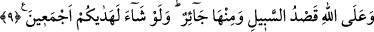

YOLUN DOĞRUSU
ALLAH’INDIR
9. Yolun doğrusu Allah’ındır. Yolun eğrisi de vardır. Allah dileseydi hepinizi doğru
yola iletirdi.
“Yolun doğrusu Allah’ındır.” Burada yol, o yolda gidenin hâline isnâd edilmiştir.
Sanki bu kişi, asla kendisinden dönülemeyen dosdoğru bir yola girmiştir. İnsanları dâvet
için deliller ortaya koymak, peygamberler göndermek, kitaplar indirmek sûretiyle
tevhîde, yâni hak yola girmek isteyen kimseye mutlaka sırât-ı müstakîmi beyan etmek,
Allah Teâlâ üzerinde bir haktır. Ancak bu O’nun sonsuz rahmetinin ve kesin olan
vaadinin bir gereğidir, yoksa zorunlu olduğu için böyle değildir. Çünkü Allah için hiçbir
şey zorunlu değildir.
“Yolun eğrisi de vardır.” Yâni, haktan ayrılan, sapan ve sâhibini doğruya ulaştırmayan
bazı yollar vardır. Bu yollar dalâlet yoludur. Sayıları sayılamayacak kadar çoktur ve
hepsi de bu isim altında zikredilirler. Yahûdilik, Hristiyanlık, Mecûsîlik ve diğer küfür
ve bid‘at ehlinin yolları gibi. Bundan anlaşılmış oldu ki âyetteki “yolun doğrusu” İslâm
dîni, sünnet ve cemaat demektir. Allah bizi ve sizi dosdoğru yola, güzel îtikad ve amele
muvaffak kılsın, eğri, sapık ve yanlış yollardan muhâfaza etsin.
İbn Kemâl der ki: “et-Tarîk, es-sırât ve es-sebîl, arasındaki fark şudur. Bunlar
müzekkerlik ve müenneslik bakımından eşittir. Mânâ bakımından ise aralarında ince bir
fark vardır. Alışılmış olsun veya olmasın yolcunun gittiği yoldur. et-Tarîk’a göre es-
sebîl, alışılan yoldur. es-Sebîl’e göre es-sırât ise eğriliği olmayan düz yoldur, özel
olarak “doğru yol” için kullanılır.”
“Allah dileseydi hepinizi doğru yola iletirdi.” Yâni eğer Allah sizin tümünüzün
zikredilen tevhîde ulaşmanızı ve hidâyete ermenizi kesin olarak dileseydi, bunu yapardı.
Fakat bunu dilememiştir. Çünkü O’nun her istek ve murâdı ona çağıran hikmete tâbidir.
Bu ise hikmetine muhâliftir. Çünkü mükellefiyet, sevâb ve cezâ cüz’î ihtiyâra bağlıdır.
Ameller de cüz’î ihtiyârın ardından gelir. Karşılık ise amellere göre verilir.
Ebü’l-Leys, tefsîrinde der ki: “Eğer Allah, bütün insanların tevhîde ehil olduklarını
bilseydi elbette onları hidâyete erdirirdi.”
Fakir (Bursevî) der ki: Bu, ‘İlim mâlûma tâbîdir.” kâidesine dayanan latîf bir
mânâdır. İman, küfür, tâat, isyan, noksanlık ve kemal gibi hallerden ancak a‘yânın ilâhî
ilme verdikleri zuhûr eder. Zâtının muktezâsı îman, tâat ve kemal olan kimse, kendi ayn-
ı sâbitesinin âleminde bunlara ehil ise onları ilme verir (bildirir) Allah da hikmeti îcabı
bu yaratılışta onun hidâyetini murâd eder. İstîdâdının muktezâsı böyle olmayan kimseye